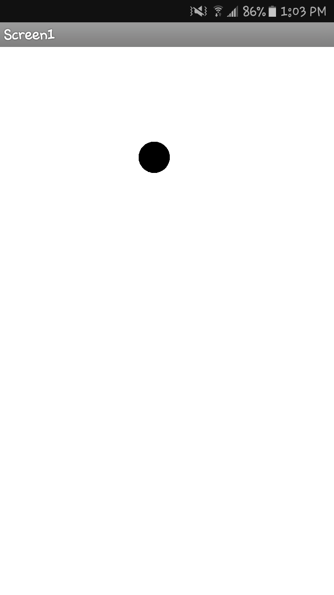
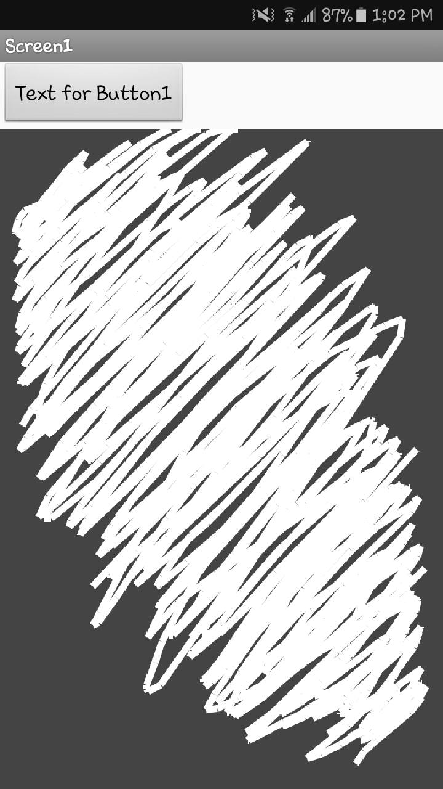

There are days in life where I feel down. This fish is my spirit animal those days.
When the performance doesn't go according to plan.

Learning to code this year has been very interesting.I didn't think I would enjoy it as much as I did.


Code Academy has challenged me in improving my coding skills which has helped me tremendiously.It fun getting to see the different games that others have created.

After playing several games in attempt to help me improve my coding skills, I achieved in collecting more certificates. It was fun learning how to code different games from space monkeys to cooking vegetables.
These past few weeks in class have been spent on creating a story using Python for coding. I didn't know what to do my story on but I decided to focus on music. Recently I've discovered new Rock bands and was influenced to do my story on that.

I was inspired by music to base my story on a band. I was introduced to new rock bands this year and wanted to do something about it.

In this assignment, I got to create my own app using my phone. For assignment 3.1 I downloaded the MIT AI2 Companion app on my phone and decided to play around with the app features. I was able to make my phone speak any phrase and was able change the background to a beach which is my favorite place of all time.In assignment 3.2 I had the task of making the voice speak while shaking my phone. I had to shake my phone while at the same time the voice was saying "Stop shaking me. This task was fun because I got to make the voice say anything while shking it."
Assignment 3.3 was about making a ball bounce around the screen. I created a canvas first then added a ball to bounce around the screen.
Assignment 3.4, I got to create a doodle board. I changed the background of the screen from white to dark grey. I combined the project from 3.3 and 3.4 to make the screen clear up again and be able to draw again. I also added a camera feature to take photos and doodle around the frame.
